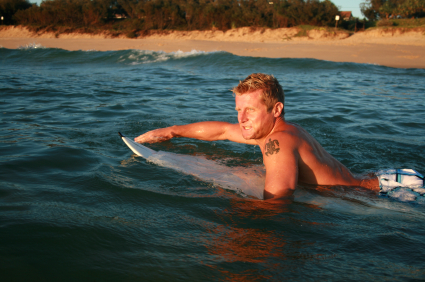

Lay on your board with your body weight positioned so that the nose sticks out of the water only slightly - you don't want the nose sticking up out of the water too much otherwise you won't go anywhere
Paddle with both arms, taking deep strokes downard into the water, not outward
The proper way to paddle (note the nose!)

When you see a wave coming that you like, turn towards the beach and start paddling your ass off. You want to have a head start for the wave to easily pick you up.
Standing Up
As the wave is approaching you from behind, continue to paddle vigorously towards the beach.
If you've got enough speed and your body is positioned right so that your nose isn't digging into the water, the wave will naturally pick you up and start pushing you forward.
There is only a small window that you'll be able to stand up, so timing here is crucial! With your hands placed on the board just below your chest, push off the board as quickly as you can into a standing position, bringing your feet forward.
It will take a while to get it right, but you want the stance you 'pop-up' into to be wide, with your knees bent, and in the middle of the board
Riding
Look at that, you're on the board! Now you just have to stay on.
Remember to keep your knees bent so that your center of gravity is low. Depending on how the wave is breaking, you'll need to determine which way you want to go
If the wave isn't that great, you might just want to hold off on steering and ride the wave in as it breaks behind you.
Notice the wide stance, which is necessary for balance
If its a nice clean wave and you want to try to carve it up to extend your ride, try shifting your weight towards the back of the board. You might need to take a step back to do this. The key here is to not roll the board left or right on its side - THAT WON'T RESULT IN A TURN, just you bailing out. Instead, you need to pivot the tail by leaning back on the tail so that the nose pops out of the water. From there, using your front leg, you can easily turn the nose of the board into the wave and ride it sideways.
Ride it out until the wave dies or you bail off, and then paddle out for another!